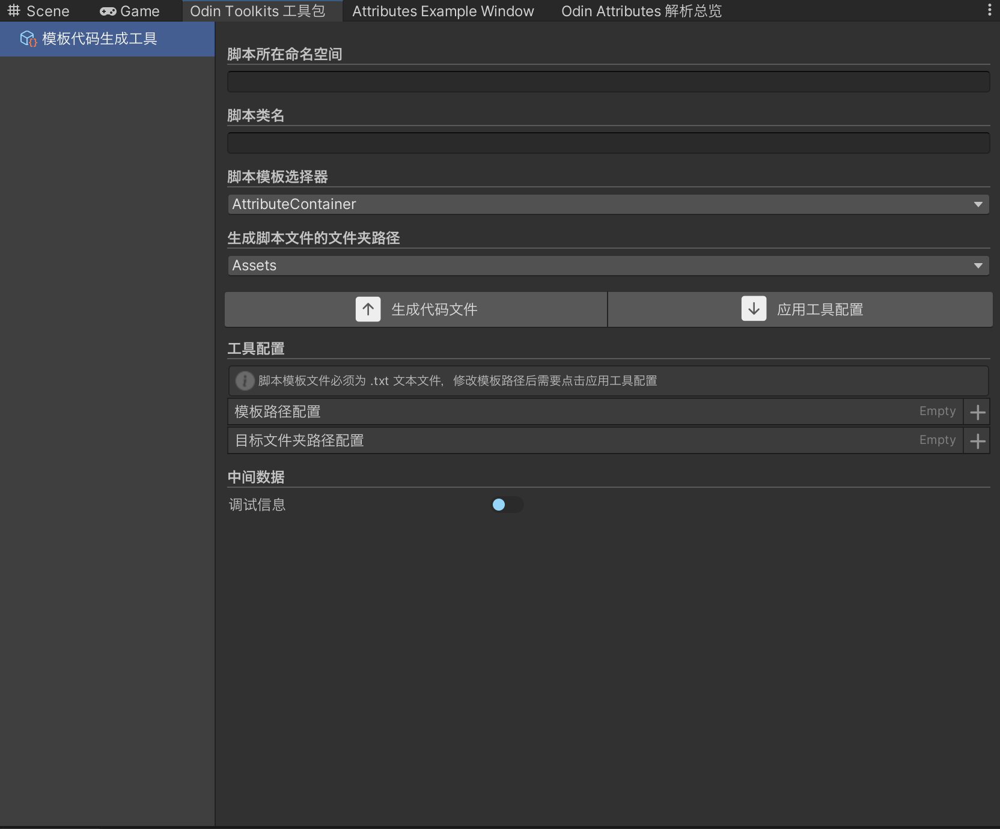

GenerateTemplateCode⚓︎
介绍⚓︎
生成模板代码工具，用于快速生成脚本模板，减少重复代码编写。
工具截图⚓︎

生成模板代码工具总览

工具使用截图

脚本模板文件参考
用法⚓︎
- 找到菜单路径 Tools/Odin Toolkits/Windows/Tools Package，Mac 快捷键 = Command + Shift + Option + T
- 配置脚本模板路径，选择 .txt 文件，将它拖入脚本模板路径输入框，自动读取
- 点击应用配置，生成脚本模板路径映射（后台，用户无感）
- 配置目标文件夹路径，可以同时存储多个文件夹路径，不需要每次都拖拽
- 设置脚本类名
- 选择脚本模板
- 选择脚本文件生成路径
- 点击生成
添加脚本模板⚓︎
- 新建脚本模板文件，文件名必须以
.txt结尾 - 模板文件中的命名空间使用
#NAMESPACE#占位，类名使用#CLASSNAME#占位 - 拖拽脚本文件到配置列表路径
- 配置脚本模板路径，并且应用，即可下拉选择模板
提示
模板文件需要注意引入的命名空间，如果有修改，需要及时修改模板。